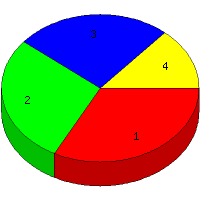

Week of 9/27/2009 to 10/3/2009: Top
4 of
4 File Types (Extensions)
Sorted by Access Count
Individual file types as determined by file extensions. All URLs that
do not contain an extension are counted as directories.

| Rank |
Type |
Accesses |
% |
Bytes |
% |
| 1 |
Directory (folder)
|
27 |
32.93 |
65,625 |
4.13 |
| 2 |
jpg
|
23 |
28.05 |
1,312,381 |
82.64 |
| 3 |
htm
|
21 |
25.61 |
35,747 |
2.25 |
| 4 |
gif
|
11 |
13.41 |
174,328 |
10.98 |